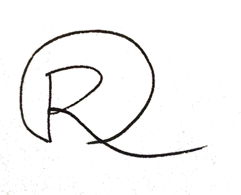

Meet Rosa!
Rosa Choi
An Introvert Leo.
A Designer who codes.
SHARE
I enjoy taking complex problems and turning them into simple and beautiful designs in various mediums. I have come to love the logic and structure of coding and strive to write elegant and efficient code.
I'm inspired by great stories, intriguing design, superb performances, chic fashion style, enduring human struggles to push our humanities a little further, and all sorts of quirky stuff. I get a zest when I travel and see different parts of the world; realizing how different yet so similar we all are. I’m currently addicted to learning code, website building and doing more projects, and being a part of the vibrant art scene in San Francisco.
My Roots in Asia
I was born on August 7th to a humble Catholic family in Seoul, S. Korea. Soon after my birth, we moved to Osaka, Japan until at the age of 4, my family returned to Seoul where we lived until I was 13. Thanks to my mom, I did very well in school. She noticed my talent for art, pushing me to excel as I won numerous awards in academic competitions and local art fairs. In school, I was taller than most of my classmates and elected class president twice during elementary school. My life was ordinary, yet fulfilling until we left our much-loved home, family and friends, and immigrated in late summer, 1990, to the land of opportunity, America.
American Dream?
My life was turned upside down. I was enrolled in the Einstein Middle School as a 7th grader in Seattle, WA. All of sudden, I wasn’t in my comfort zone, I wasn’t one of the tallest kids, I wasn’t one of the kids who excelled in school. I became a strange looking mute in my class. I didn’t speak a word of English and I was painfully homesick. I missed everything I used to have. I felt powerless and hopeless.
After 3months of constant rain and tears, we left gloomy Seattle and found a new home in a beautiful city by the Bay in the Golden State. Instantly, I fell in love with San Francisco and found that I was no longer a stranger. San Francisco felt like home. Occupying all corners of this picture perfect city, are all sizes, shapes and colors - everything beautiful and ugly; all accepted.
My high school years were equal parts rough and rebelliously fun times! Yet, I was still serious enough to enter and win a 2nd prize in the Bay Area Youth Architecture Competition my senior year. This win encouraged my destiny to study and pursue art!
I heart ART
I fulfilled my dream of going to Art College. In 2001 I graduated from Academy of Art University with two Bachelor's degrees; one in Illustration/Fine Art and the other in Computer Arts. Despite the commitment I had made to devote my life to art and design, I wasn't ready to pursue it full time and couldn't make ends meet to repay my student loans!
Entry to the Tech World
I changed my strategy; landing a job at Samsung Semiconductor Inc. in Silicon Valley as an Executive Assistant to the CEO and President. It was an amazing opportunity for me to work at a world-class corporation and gave me the priceless chance to witness the birth of cutting-edge innovative products. Every day was filled with high volume, fast paced work tasks; leaving little room for life outside. Although I thoroughly enjoyed the ferocious work environment and the rush of being around high profile technology leaders and the perks that come with this type of position, after 4 and a half years I was ready to travel the world beyond Silicon Valley.
Samsung will always hold a special place in my life because from there I not only learned a great work ethic but met my two best friends who remain an influential force in my life today.
Bon Voyage
What better way to celebrate the big 3-0 and exiting the high stress world of Corporate Silicon Valley than to jump out of an airplane at 13,000 feet?! I deserved this exciting free fall, a metaphor for the new phase in my life. I convinced my best friend, broken arm and all, to skydive with me. We were at once terrified and excited as the plane took off from the runway - there was no going back, on this free fall or with my life plan.
Then I was given a perfect reason to travel. I was invited to a friend’s wedding in France. After attending a beautiful French wedding in Saint-Étienne, I traveled to Avignon and Orange, and then took the TGV to Lyon and Paris. As a student of art, I couldn’t help but fall in love with Paris. I spent a lot of time awestricken at Norte-Dame, Musee du Louvre, Shakespear & Company Book shop, Sainte Chapelle, Musée d'Orsay, Centre Pompidou, Montmartre, Palace of Versailles, Jardin des Tuileries, and the list goes on. I spent many days walking; taking in as much of the history and magnificent architecture, art, music, and culinary experiences I could to gain a glimpse into the life of Parisians. My 15 days flew by in a blink and I was off to Barcelona.
Unlike Parisians, people in Barcelona loved to chat, didn’t mind speaking in English even if it was broken, and seemed very laid back. They are warm, friendly, flirty, and as passionate as their Mediterranean weather is to travellers. I delved right into Antoni Gaudi’s exquisite architecture and works, spending hours admiring La Pedera, Casa Batllo, Sagrada Familia, and Park Güell. It’s such a marvelous experience to actually see, feel, and be immersed in these greatest works of art that our humanity has achieved throughout mankind's history.
I also visited Parc de Joan Miro, Castell de Montjuic, Poble Espanyol Spanish village, Santa Maria del Mar, beautiful Mediterranean beaches, Museu Picasso, and had a fabulous dinner at Els 4 Gats where artists, including Picasso and Salvador Dali gathered in their time to chat. Every waking moment was a blessing and filled with dazzling experiences. When the sun went down, I enjoyed different kinds of paella and watching flamenco dancers perform. I promised myself that I would one day revisit this exhilarating city.
Charting A New Territory
I’ve always been intrigued by how the world economy works and how and who decides the monetary value of all the things in the world. While I was working at Samsung, I started reading about macroeconomics and found stock trading quite stimulating. I started doing day trading and option trading; watching how the market and stocks trade every minute, monitoring live stock charts, following every bit of news that might steer stock markets to go up or down. There was utterly so much to learn and digest, from new jargons to reading charts, knowing which trend to follow to which companies are considered the bellwethers. I memorized most of stock tickers, GOOG, AAPL, BAC, etc. I woke up every morning at 5am watching CNBC and anticipating how the stock market would be that day. Hearing the opening bell of stock market gave me a rush and then I would stare at the S&P chart until the ding-ding of the closing bell. I lived through many highs and lows during this time. It was very addictive and I soon became a stock junky. The world I used to know had completely changed. Some unknown companies’ earning reports mattered so greatly to me and I welcomed the fluctuation of markets. I had a glimpse of how the world of capitalism really works.
The stock trading experience helped boost my knowledge and enthusiasm to connect the relationships between the stock market and the economy. This also strongly promoted my personal interest in the world of trade and business. I rapidly increased my experience in gains and losses due to the risks involved in being a trader of this nature. However, I wasn’t knowledgeable enough and my bankroll wasn’t big enough to sustain my trial and come through. It became apparent that this type of work was extremely difficult for me to continually cope with in the long term.
It was difficult to accept my failure and move on. It was darn hard to go back to working 9 to 6 regular jobs but I had nothing left and I lost all I had. I jokingly told my friends, it was still worth it if I consider my 2 years of trading as 2 years of going to Grad school. Not sure if it’s true but I truly learned a lot. When the US financial market was in turmoil, I was incredibly fortunate to be offered a job in Abu Dhabi, a place I had never heard of. Through my stock trading, I was well aware of the worlds of Dubai, Qatar and Saudi and that these places were still growing with their petro dollars but I never thought that I would be working and living in Abu Dhabi, in the Middle East!
Despite all the worries and concerns expressed by family and friends, I packed my luggage and embarked on a 17-hour direct flight from SFO to Dubai. Still to these days and to my amazement, I don’t know where I got my courage to took this adventure to a place where I knew nothing about and knew of no one.
I have to admit that it wasn’t easy to get acclimated to my new surroundings. This new world seemed utterly different and entirely foreign to me from the moment I stepped off the plane. My initial reaction to every dissimilar thing was to sturdily resist and detest. It took me a long, I mean a long time, to assimilate. UAE’s modern architectures, mega-sized shopping malls, Ferraris on new highways, shining yachts on turquoise water, shimmering white sand beaches, and 5 to 7 star world class hotels and resorts completely threw me off. It felt like I was in Las Vegas but for sure it wasn’t Las Vegas. I was having trouble understanding the multiple layers, different social classes, and the complexity of this yet to be 40 years-old country. This is where modern luxury on steroids had a shotgun marriage with the traditions of Bedouin. I was intrigued to learn and understand the real thing that makes Emirati and this nation so special but wasn’t able to go beyond their White Kandoras and Black Abayas until I met an extraordinary man in late 2010.
He was known as Wasel Safwan, a well-known local artist who had a beautiful studio out in the desert. I first met him at the cafeteria of downtown campus at NYU Abu Dhabi. An Art Professor invited Wasel to a Visual Art Conversation group that I was facilitating. After that chance meeting, we met a couple more times at NYU Abu Dhabi’s events and social gatherings. Then he invited me to his studio in Al Ain. At first, I was a little scared to visit his studio alone, but soon I was mesmerized by his beautiful art works. The contrast between his abstract contemporary paintings against the undulating sand dunes was striking. It was an imagery I had never before encountered.
My admiration towards his artwork soon turned into a romance and our courtship continued. Through Wasel, I discovered the whole spectrum of life in UAE. Out of my ignorance, I used to think that a lot of things were derived from or dictated by their Islamic religion, but I learned that many things were based on their traditions and have no ties to religion. I was even able to distinguish the difference in Qatari traditional attire vs. Saudi traditional attire vs. Omani traditional attire vs. Emirati’s. I came to understand why there are women-only banks, women-only beaches, what it means to have family only sections, etc. I had a better understanding of how different social groups interacted. I had a deeper understanding of the GCC (Gulf Cooperation Council) as a whole and became more aware of subtleties and details. We traveled together locally to the Empty Quarter and to the border of Saudi Arabia. Wasel took me to places in UAE that I would have never reached without a local guide.
Studio in the Empty Quarter
In December, 2011, Wasel had a month-long project with the Staatiche Kunstsammlungen Dresden (Dresden State Art Collections) through the Embassy of Germany and headed to Dresden. Wasel gave a talk at the Dresden Academy of Fine Arts and was to visit other cities in Germany as well. I felt this was a perfect excuse to travel again! I followed him to Germany. We travelled from Berlin to Nürnberg to Rothenburg ob der Tauber to Munich by train. For Wasel, this was his first time to see snow, and even for me, it had been a such a long time that we were like two happy puppies running all over the place with the utmost of excitement. The Christmas market in Nürnberg was incredibly festive and we felt like we were in wonderland. While in Munich, he popped a question, “Why don’t we get married?” Through our travels, we learned more about each other and found each other inseparable.
Winter in Bavaria
I was fortunate to have experienced living in both Abu Dhabi and Dubai in United Arab Emirates; worked at a local Real Estate Development company and was part of a project developing Abu Dhabi’s new Financial Center; worked at NYU Abu Dhabi and was part of building a Global Networking University. I’m ever so grateful for the friendships and acquaintances I was able to establish with people from all over the world. I abundantly enjoyed meeting the great minds at NYU Abu Dhabi and wonderful spirits of world travellers and expats, and all the amazing experiences I never thought I would have. I also learned to survive the extreme heat (it reaches up to 150F during summer) and the extreme cold of a blasting air-conditioner throughout the year, to drive in a sand storm, spend overnight out in the desert, to be absolutely alone, and how to ask locals for help when the car gets stuck in the sand, how to secretly consume food during Ramadan, how to sleep through the prayer calls, to navigate to the exit in gigantic mega malls, learnt not to stare at men and women in white and black traditional costumes, etc. but most importantly I learnt to respect and embrace the cultural, political, religious, and other fundamental differences we have with others. At the end of the day, we as human beings have more in common than the minor differences we can’t seem to ignore.
Wasel and I stumbled upon an astonishing opportunity to work as a team. CapitaLand, Singaporean Real Estate giant had a project in Abu Dhabi and was looking for an artist to do commission work. Wasel created 5 large-scale oil paintings for each of the 5 brand-new high-rise towers. The client wanted each painting to be the centerpiece of the lobby. While Wasel was working on these paintings, I worked as a project manager and artist manager to oversee project parameters, work schedule, contract management, track expense, host visitors, and coordinate opening reception. Our partnership seemed natural and we both knew instantly that we thrive together in a creative environment. We completed our project in sixty-six days and this marked our first project together.
Despite my affection towards the people I worked with and the newfound attachment to this land, it was time for Wasel and I to leave Abu Dhabi and embark on another venture to Little Red Dot.
Happily Asian(borrowed term from Artist Wasel)
I had no idea Singapore was called the Little Red Dot until I got there. Singapore is quite small even for an Island, but its ambition is truly world class. As much as I was stunned by the rapid growth and development in the desert of Abu Dhabi and Dubai, made possible with oil, their black gold, I was blown away by Singapore’s immaculate infrastructure and development without any natural resources. Their hard working ethics and strength in education transformed the unthinkable into a neat and systematic reality.
My fiancé Wasel has always been fascinated by Asian culture and has been fond of everything about Asia. He was genuinely happy in Singapore and even picked up some Singlish. He was inspired by Lee Kwan Yew and quickly plunged into Singaporean life.
I, on the other hand, had a difficult time adjusting to the tropical climate. I frequently got sick and my sickness lingered unnecessarily long. “I miss San Francisco” became my daily slogan. Even though I sincerely liked the culture, food and the people of Singapore, I just couldn’t love getting bitten by mosquitos continuously, sweating as soon as I walked out from the shower, and not being able to wear my silk dresses and nice leather shoes!
Despite my dislike towards the extreme humidity, Singapore will always have a special place in our hearts. This is the place where Wasel and I registered our marriage in the beautiful House at Dempsey. In honor of his wife, Wasel adopted my last name and became Wasel Choi and we had a mini honeymoon in Ubin Island, completed Wasel’s immigration to the US, and I worked at NYU Tisch School of Arts in Asia in the Film department. We also traveled extensively to Malaysia and covered most of the places including Kota Kinabalu in Borneo Island.
We are forever grateful for those we met, visited us, and became friends in Singapore and made our stay so much more meaningful. Ironically, as I once emigrated from Incheon Airport in Korea to US at age 13, Wasel and I once again crossed the Pacific Ocean to reach San Francisco from Incheon Airport. Perhaps some things in life are truly meant to be.
Return of the Jedi Rosa
Alas, I’m back home after 4 years of living abroad. This time I brought a man with me. The biggest and the most valuable souvenir I’ve ever acquired in a foreign land.It will be hard to ever beat this.
Currently, I’m enjoying life with my husband, who loves San Francisco equally as much as I. This website is my first, built from scratch as a result of my recently completed 10 week course learning Front End Web Development from General Assembly. I have to admit, I am totally hooked.
I’m thirsty and hungry to learn, create, and contribute. I also know that my best work and greatest adventure are still ahead of me. I feel that I’m tremendously fortunate to be surrounded by astonishing open source communities and incredibly talented individuals and entrepreneurs in San Francisco. They are so open, generous, and willing to share their knowledge for the greater good. I believe that as Technology continues to evolve and become even more deeply integrated into our daily lives, good design will become a requirement rather than a nice-to-have feature. Tech-savvy consumers simply demand appealing, smartly designed products and no less. I’m super excited to be back and ready to do some wicked design! So thank you for visiting my site and reading my story.
April 2, 2014
Rosa
